Background
As users in a digital world, we have all come across websites where we
thought to ourselves, “Hmm this is not a great website.” Many websites
have issues related to usability, learnability, memorability, and
accessibility as well as poor design choices in general that hinder the
user’s experience.
Craigslist: A Case Study
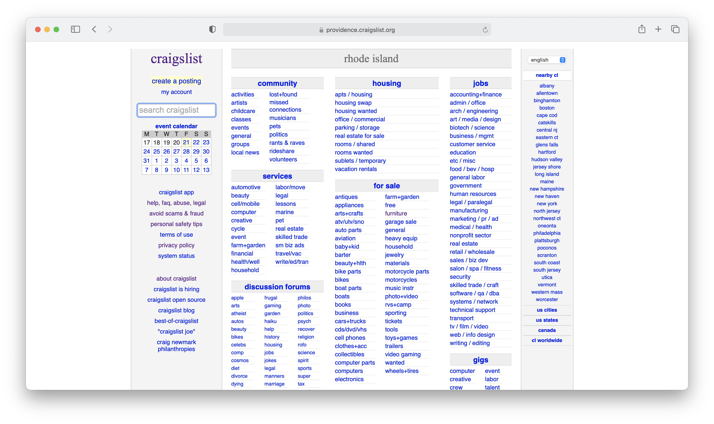
Craigslist is a website that allows users to post listings to buy and
sell items while also having many other features like job listings,
discussion boards, and local events. The company was founded in 1995 and
its website has barely been updated since. While some may be proponents
of its “simple” interface, I argue that it is not as simple and
intuitive as it may seem. For this project, I will be redesigning the
main landing page of Craigslist, which as you can see below is a bit
chaotic and overwhelming. You can view the site here.
Usability Issues - Conceptual Model
When a user first looks at this page, they develop a
conceptual model
about how to use the interface. Based on the design of the interface,
users are immediately drawn to the leftmost "header" column where the
website title and other seemingly important information one would think
would be held. The issue here is that the website does not follow this
conceptual model because most of this information in the left column is
useless. In fact, the right column - which is where users would
typically look last - is actually where they should go to first because
they need to first select a location to view listings for. The layout
here is not intuitive to the proper conceptual model.
Usability Issues - Location
One of Craigslist's main draws is finding/selling things in your area,
yet selecting location is a difficult task with this design. As
mentioned above, location is one of the first things a user needs to
select, but it is set far to the right of the website, which is not the
first place a user is drawn when they open the site. Furthermore, the
design of the location selector leads to several usability issues.
As shown below, the location section has 5 main categories -
nearby cl which lists seemingly random cities that are "nearby"
(although this is not clear what qualifies as "nearby" given Albany and
Philadelphia are pretty far from Providence ), us cities which
lists some but not all city options in the US, us states which
lists all the states, canada if you are interested in searching
in canada, and cl worldwide which includes other countries and
continents.
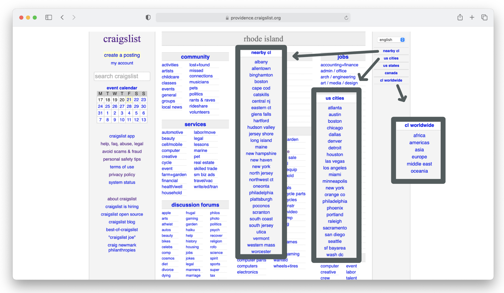
This way of selecting a location is not easily learnable because each
section interacts differently. Sometimes you can just choose a city, but
if you choose a state, you may be redirected to another page to choose a
city, but not always. Even though there is a section for US cities, it
doesn't include all the cities - more options pop up later when you
chose a state.
Also it is an interesting choice to have a full separate section for
Canada and then another separate section for other countries. Using the
worldwide tab is also not intuitive because the sublinks look like the
same links as all the other ones, but some actually act as headers and
expand to reveal more options as is shown below with Asia. Furthermore,
once pressing on a country from the worldwide section, the whole right
bar is rerendered to show different headings (like shown in the India
example below). So while these options look vaguely like headings that
should be static, they in fact change.
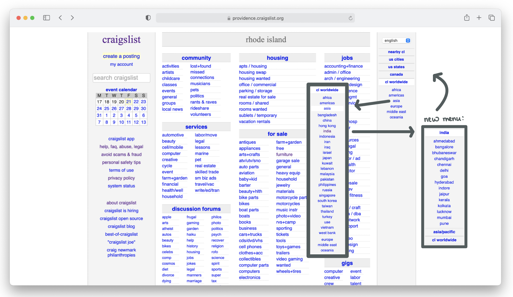
This leads to issues with memorability because even if a user manages to
figure out how to get to a desired location one time, they will likely not
remember this when they use the website again in a few days or weeks. They may
know they got there before but the layout is confusing so it is hard to know
what order to click things in. Another with usability of the location
feature is if users are exploring locations, end up in a different continent,
sometimes the US option disappears or becomes buried and it may be hard
to work their way back.
Usability Issues - Link Inconsistencies
The left sidebar is cluttered with links that are not super important and take up
valuable space. They also present mutliple usability issues related to usability,
learnability, and memorability. Some of these links don't have intuitive names.
For example, the help, faq, abuse, legal line on the left is actually one link that
leads to a help page. In fact, many of these links go to the same place as shown
below. Some have different names yet go to the same place, and some are simply repeated twice.
This leads to confusion for users who wonder if links with the same name do different things - because
why else would there be two of the same thing. However, some of the redundant links link to
the same page while others link to different pages. This also causes memorability issues
because a user will have a difficult time remembering which link they can use to get to which place.
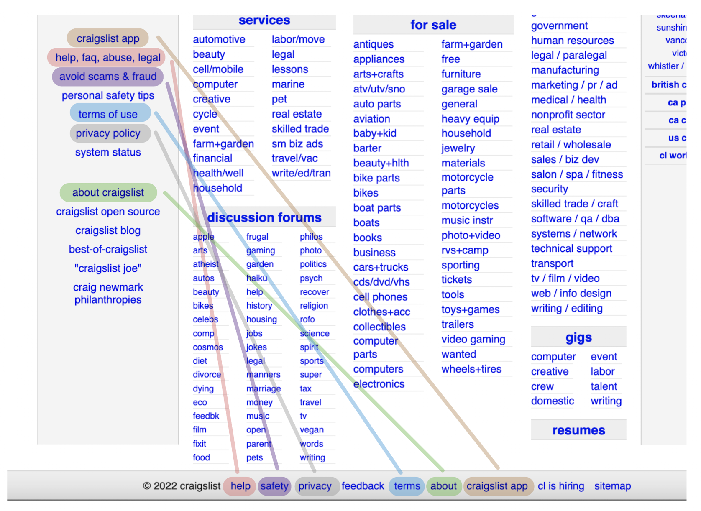
Below shows some of this confusion with the help, faq, abuse, legal link on the left
linking to the same link as the help link at the bottom. Similarly, users might think
that personal safety tips on the left would link to the same place as safety on the bottom,
however, this safety link really links to a page about scams, the same page as the avoid scams & fraud
link that is on the left.
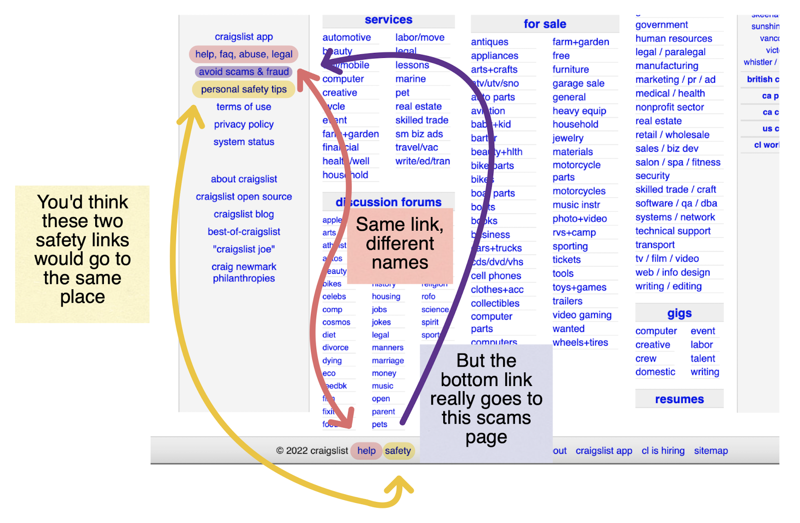
As you can see, these links are a mess, not to mention they aren't organized into related categories and placed
all in one central location.
Usability Issues - General
Other issues with the design of the site that impact the user expperience are as follows:
-
Naturally people gravitate towards the middle, but there is so much text thrown at you here that it can get overwhelming, especially because the search bar is not featured front and center but rather hid off towards the left
-
Links are organized grouped into categories and then a bunch of links to subcategories are listed alphabetically. There can be over 30 of these
links, but simply listing them all isn't the most useful to quickly find what the user is looking for.
It is too much information to process at once, and could better be broken down by further subcategories to make the experience more efficient
-
Links use abbreviated names that are not always clear - for example, "eco" in the discussion section links to
a forum on ecology, but based on "eco", one could think it links to economics, eco-friendliness, or something else
-
All the links being displayed at once makes it take longer for the user to find what they came for. For example, if I came to look for a job, I don't want
to have to sift through a bunch of other information to find my category of interest
-
There is no button to sign into your account or view if you are logged in
-
Headings for the categories are not very clear and don't stand out / convey a good hierarchy
-
Webpage is not responsive so shrinking the window makes the user need to scroll the window over to see the rest of the site
-
Not clear what the calendar is for. It is also not labeled with the month, does not allow toggling between months,
and doesn't follow the traditional calendar structre (it show four weeks ahead instead of the current month). The calendar
is also very small and does not resize
Usability Issues - Accessibility
According to the accessibility site WebAIMWAVE, the original Craigslist does not
have many accessibility issues. One of the things WAVE mentioned that I agree with is that some of the text is too small. Especially
because the content does not resize, some of the links are small and cannot get bigger, particularly in the discussion forums
section. Although that section is particularly small, a lot of the links are small too and could be more accessible with a bigger font.
WAVE also mentioned some things more on the code side that prevents the site from being accessible to screen readers, such as the search bar missing
a form label, no language being specified for the website, and some hidden aria content is not presented to screen readers. These are issues
that should be fixed to make the site more accessible
One thing that WAVE didn't mention but I think could be an issue is the brightness of the blue that makes up the text of
all the main links on the screen. Since nearly all the content is links, this leads to a lot of blue that
could be bright and overwhelming to some peoples' eyes.
Low-Fi Prototyping
As a first step in redesigning Craigslist to make it responsive and more user friendly,
I made three low-fidelity wireframes using Balsamiq to visualize the layouts for a desktop,
tablet, and mobile phone. As I designed these prototypes, I considered the usability problems
identified above and the sticky notes below explain how these issues were addressed. The layout
is also respsonsive which is why content looks similar across devices.
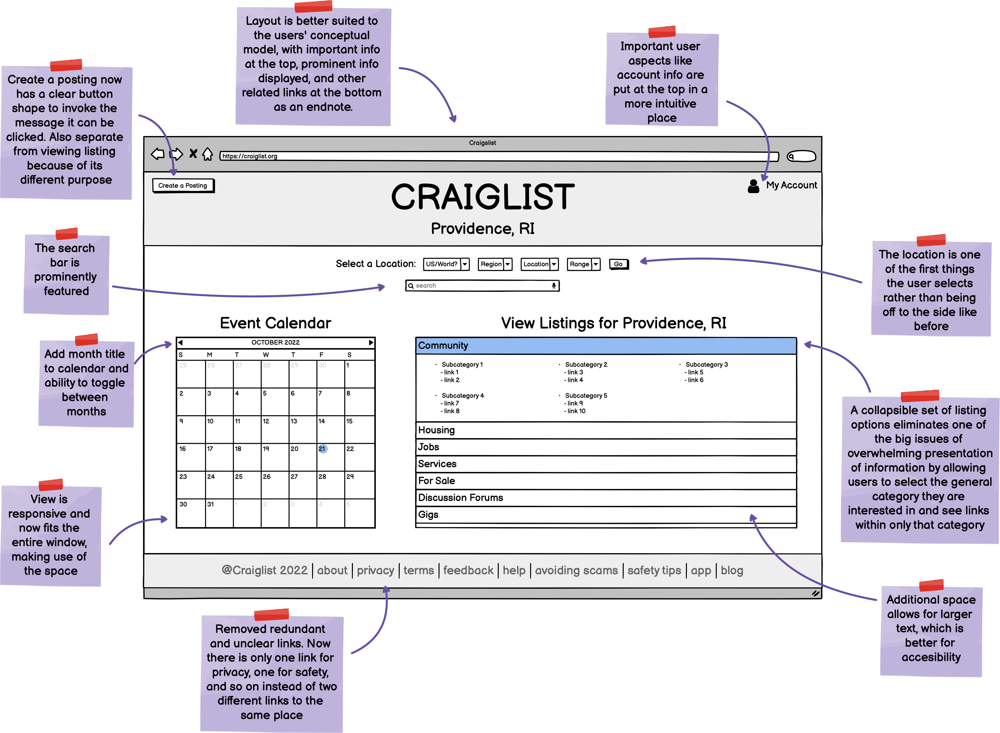
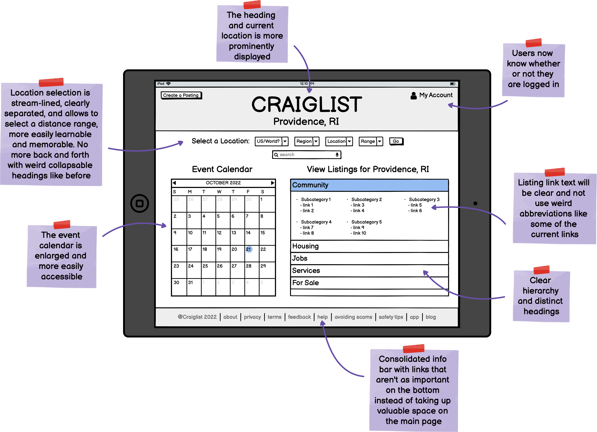
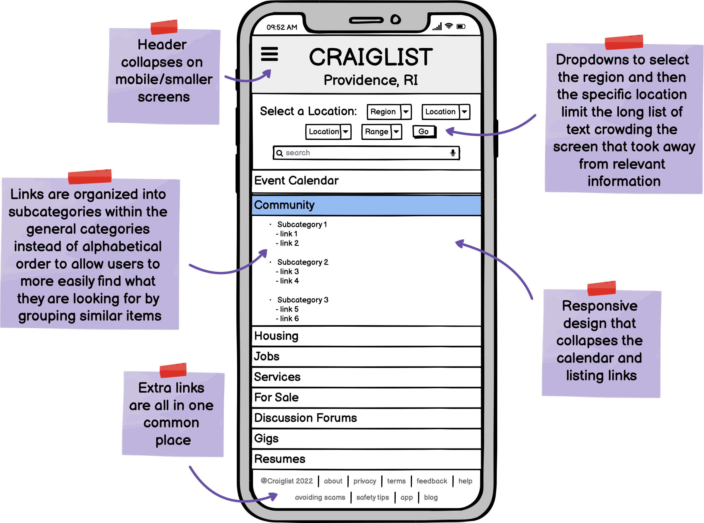
Visual Design Style Guide
As a first step in the design process, I created the following visual design documentation in Figma
that details reusable components that will be in my design as well as some fonts, colors, and other elements.
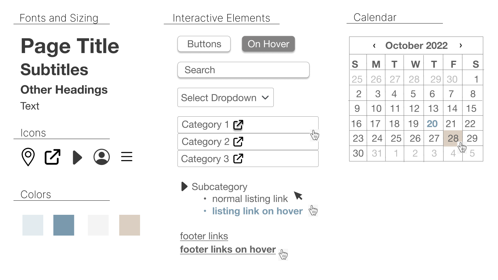
High-Fi Prototyping
The following are my high-fidelity prototypes I created using Figma and are annotated
with comments on how to implement the design using html and css properties. In my implementation,
I plan to use bootstrap libaries, so I included references to those libaries in my comments (such as
the grid system, buttons,
accordians, and navbars).
Since my prototypes span more than the height of a screen, the following are static screenshots of my figma prototypes.
Desktop
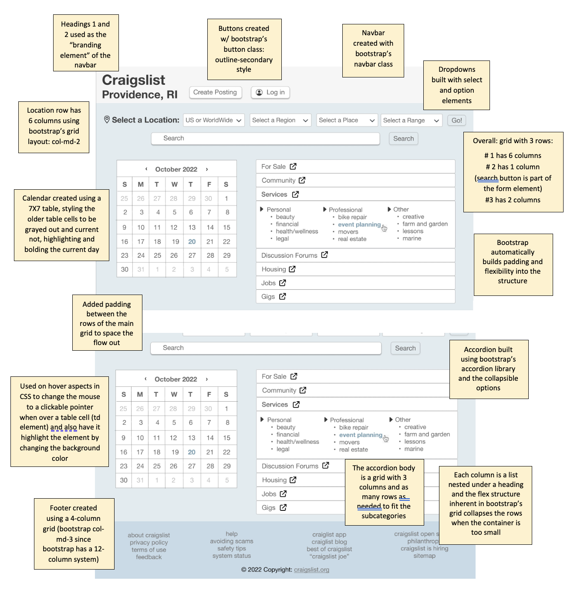
Tablet
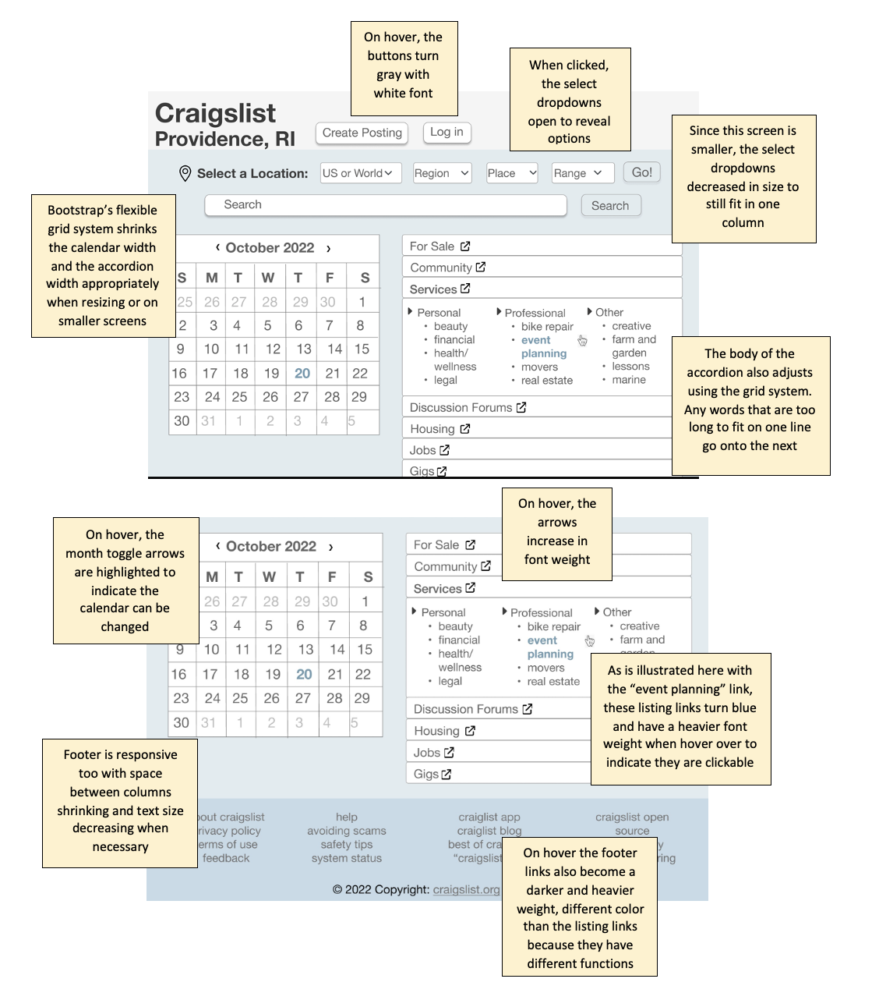
Mobile Device
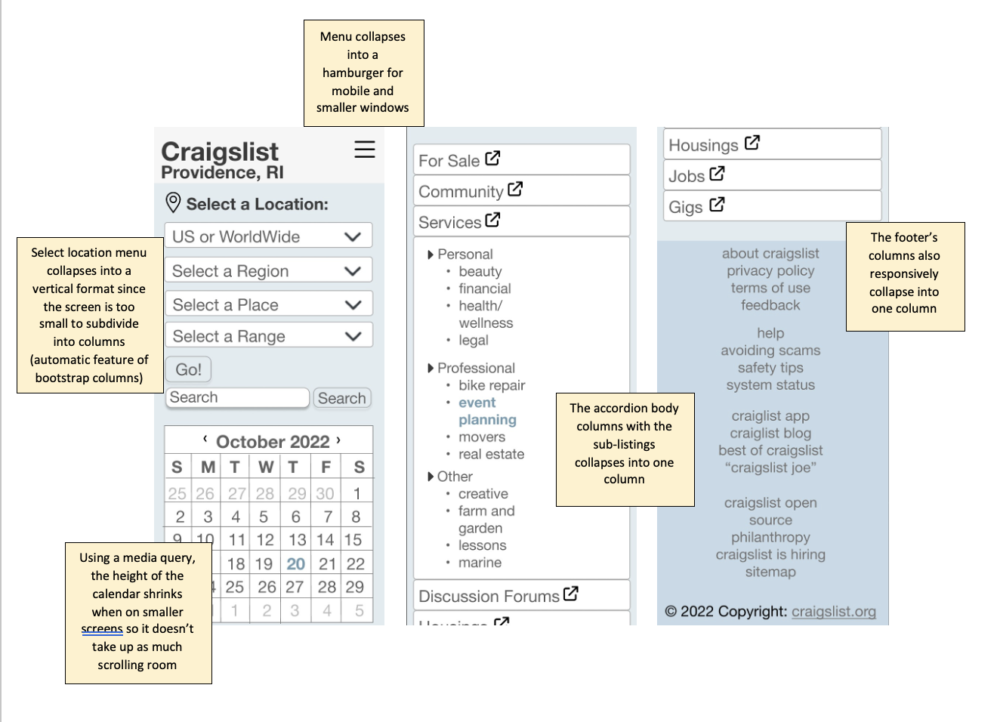
Final Responsive Redesign

After putting my prototypes into action, I have completed my responsive redesign of Craiglist. View the final result at
this website. Feel free to explore the developer tools
to see how this site would look on different screen sizes. Enjoy the new and improved Craigslist experience :)
Comments
Note that the website is not completely responsive to clicks because javascript was not required for this assignment. For example the accordians can open using
bootstrap's collapse library but clicking them again does not close them, but ideally
this would be the target behavior in a fully functional website.
Similarly, other
interactive elements are not completely interactive for this preliminary redesign.
For example, in a future design of this project, I would like to be able to collapse
the subheadings that use the icon and only expand
the sub-category the user is interested in, but that requires javascript.
Additionally, the header didn't come out exactly how I envisioned, and I spent a great deal
of time playing with it, but ultimately was unable to do what I hoped with my (nonexistent) html/css background